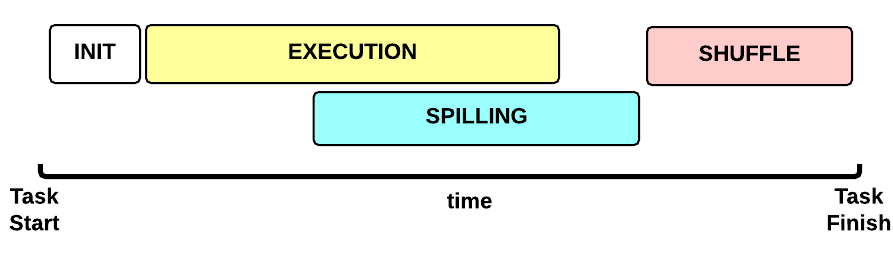
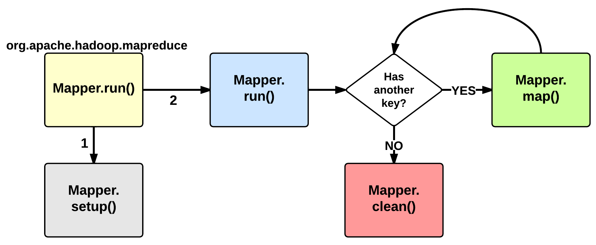

Anatomy of a MapReduce Job
In MapReduce, a YARN application is called a Job. The implementation of the Application Master provided by the MapReduce framework is called MRAppMaster.
Timeline of a MapReduce Job
 This is the timeline of a MapReduce Job execution:
This is the timeline of a MapReduce Job execution:
- Map Phase: several Map Tasks are executed
- Reduce Phase: several Reduce Tasks are executed
Notice that the Reduce Phase may start before the end of Map Phase. Hence, an interleaving between them is possible.
Map Phase
We now focus our discussion on the Map Phase. A key decision is how many MapTasks the Application Master needs to start for the current job.
What does the user give us?
Let’s take a step back. When a client submits an application, several kinds of information are provided to the YARN infrastucture. In particular:
- a configuration: this may be partial (some parameters are not specified by the user) and in this case the default values are used for the job. Notice that these default values may be the ones chosen by a Hadoop provider like Amazon.
- a JAR containing:
- a
map()implementation - a combiner implementation
- a
reduce()implementation
- a
- input and output information:
- input directory: is the input directory on HDFS? On S3? How many files?
- output directory: where will we store the output? On HDFS? On S3?
The number of files inside the input directory is used for deciding the number of Map Tasks of a job.
How many Map Tasks?
The Application Master will launch one MapTask for each map split. Typically, there is a map split for each input file. If the input file is too big (bigger than the HDFS block size) then we have two or more map splits associated to the same input file. This is the pseudocode used inside the method getSplits() of the FileInputFormat class:
num_splits = 0
for each input file f:
remaining = f.length
while remaining / split_size > split_slope:
num_splits += 1
remaining -= split_size
where:
split_slope = 1.1
split_size =~ dfs.blocksize
Notice that the configuration parameter mapreduce.job.maps is ignored in MRv2 (in the past it was just an hint).
MapTask Launch
The MapReduce Application Master asks to the Resource Manager for Containers needed by the Job: one MapTask container request for each MapTask (map split).
A container request for a MapTask tries to exploit data locality of the map split. The Application Master asks for:
- a container located on the same Node Manager where the map split is stored (a map split may be stored on multiple nodes due to the HDFS replication factor);
- otherwise, a container located on a Node Manager in the same rack where the the map split is stored;
- otherwise, a container on any other Node Manager of the cluster
This is just an hint to the Resource Scheduler. The Resource Scheduler is free to ignore data locality if the suggested assignment is in conflict with the Resouce Scheduler’s goal.
When a Container is assigned to the Application Master, the MapTask is launched.
Map Phase: example of an execution scenario

This is a possible execution scenario of the Map Phase:
- there are two Node Managers: each Node Manager has 2GB of RAM (NM capacity) and each MapTask requires 1GB, we can run in parallel 2 containers on each Node Manager (this is the best scenario, the Resource Scheduler may decide differently)
- there are no other YARN applications running in the cluster
- our job has 8 map splits (e.g., there are 7 files inside the input directory, but only one of them is bigger than the HDFS block size so we split it into 2 map splits): we need to run 8 Map Tasks.
Map Task Execution Timeline
 Let’s now focus on a single Map Task. This is the Map Task execution timeline:
- INIT phase: we setup the Map Task
- EXECUTION phase: for each (key, value) tuple inside the map split we run the
map()function - SPILLING phase: the map output is stored in an in-memory buffer; when this buffer is almost full then we start (in parallel) the spilling phase in order to remove data from it
- SHUFFLE phase: at the end of the spilling phase, we merge all the map outputs and package them for the reduce phase
MapTask: INIT
During the INIT phase, we:
- create a context (
TaskAttemptContext.class) - create an instance of the user
Mapper.class - setup the input (e.g.,
InputFormat.class,InputSplit.class,RecordReader.class) - setup the output (
NewOutputCollector.class) - create a mapper context (
MapContext.class,Mapper.Context.class) - initialize the input, e.g.:
- create a
SplitLineReader.classobject - create a
HdfsDataInputStream.classobject
MapTask: EXECUTION

The EXECUTION phase is performed by the run method of the Mapper class. The user can override it, but by default it will start by calling the setup method: this function by default does not do anything useful but can be override by the user in order to setup the Task (e.g., initialize class variables).
After the setup, for each <key, value> tuple contained in the map split, the map() is invoked. Therefore, map() receives: a key a value, and a mapper context. Using the context, a map stores its output to a buffer.
Notice that the map split is fetched chuck by chunk (e.g., 64KB) and each chunk is split in several (key, value) tuples (e.g., using SplitLineReader.class). This is done inside the Mapper.Context.nextKeyValue method.
When the map split has been completely processed, the run function calls the clean method: by default, no action is performed but the user may decide to override it.
MapTask: SPILLING

As seen in the EXECUTING phase, the map will write (using Mapper.Context.write()) its output into a circular in-memory buffer (MapTask.MapOutputBuffer). The size of this buffer is fixed and determined by the configuration parameter mapreduce.task.io.sort.mb (default: 100MB).
Whenever this circular buffer is almost full (mapreduce.map.
sort.spill.percent: 80% by default), the SPILLING phase is performed (in parallel using a separate thread). Notice that if the splilling thread is too slow and the buffer is 100% full, then the map() cannot be executed and thus it has to wait.
The SPILLING thread performs the following actions:
- it creates a
SpillRecordandFSOutputStream(local filesystem) - in-memory sorts the used chunk of the buffer: the output tuples are sorted by (partitionIdx, key) using a quicksort algorithm.
- the sorted output is split into partitions: one partition for each ReduceTask of the job (see later).
- Partitions are sequentially written into the local file.
How Many Reduce Tasks?
The number of ReduceTasks for the job is decided by the configuration parameter mapreduce.job.reduces.
What is the partitionIdx associated to an output tuple?
The paritionIdx of an output tuple is the index of a partition. It is decided inside the Mapper.Context.write():
partitionIdx = (key.hashCode() & Integer.MAX_VALUE) % numReducers
It is stored as metadata in the circular buffer alongside the output tuple. The user can customize the partitioner by setting the configuration parameter mapreduce.job.partitioner.class.
When do we apply the combiner?
If the user specifies a combiner then the SPILLING thread, before writing the tuples to the file (4), executes the combiner on the tuples contained in each partition. Basically, we:
- create an instance of the user
Reducer.class(the one specified for the combiner!) - create a
Reducer.Context: the output will be stored on the local filesystem - execute
Reduce.run(): see Reduce Task description
The combiner typically use the same implementation of the
standard reduce() function and thus can be seen as a local reducer.
MapTask: end of EXECUTION
At the end of the EXECUTION phase, the SPILLING thread is triggered for the last time. In more detail, we:
- sort and spill the remaining unspilled tuples
- start the SHUFFLE phase
Notice that for each time the buffer was almost full, we get one spill file (SpillReciord + output file). Each Spill file contains several partitions (segments).
MapTask: SHUFFLE
Reduce Phase
[…]
YARN and MapReduce interaction